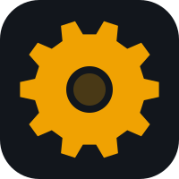

A Factorio-style production game. Lay out factory chains, automate the logistics, and keep the city that never sleeps running.
Four building types — miner, smelter, assembler, and storage — that feed each other.
Adjacent buildings pull the inputs they need automatically. No manual hauling.
Progress bars show every recipe as it completes, so you can spot the bottleneck.
One shared Swift 6 codebase, native SpriteKit rendering on both platforms.
Responsive layouts on iPhone and iPad; a fixed widescreen board on the Mac.
MIT licensed. No ads, no purchases, no accounts.
The web build runs straight in the browser — nothing to download.